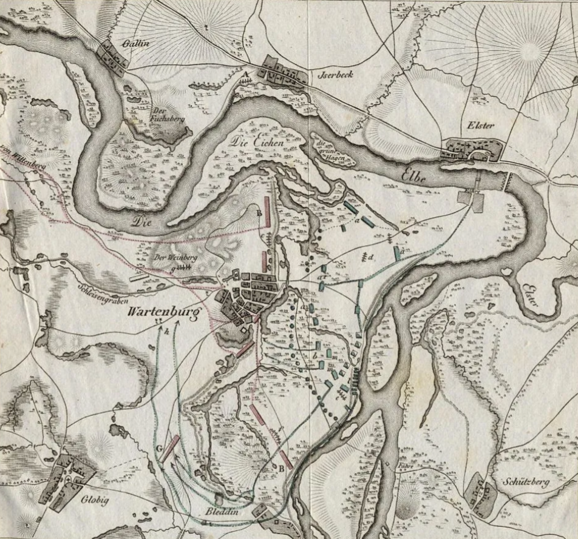
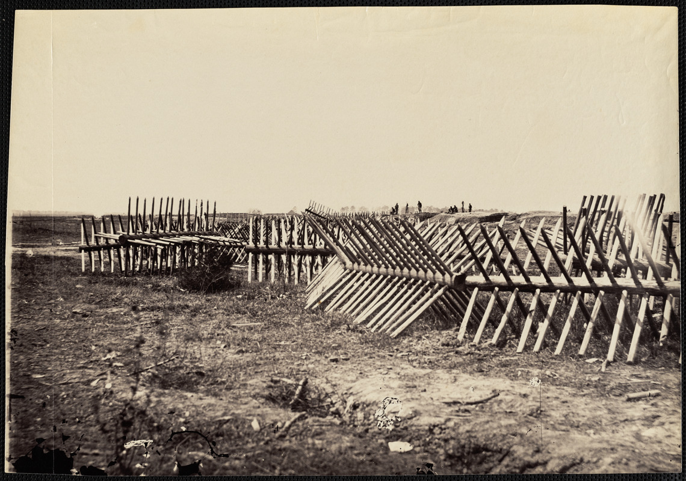
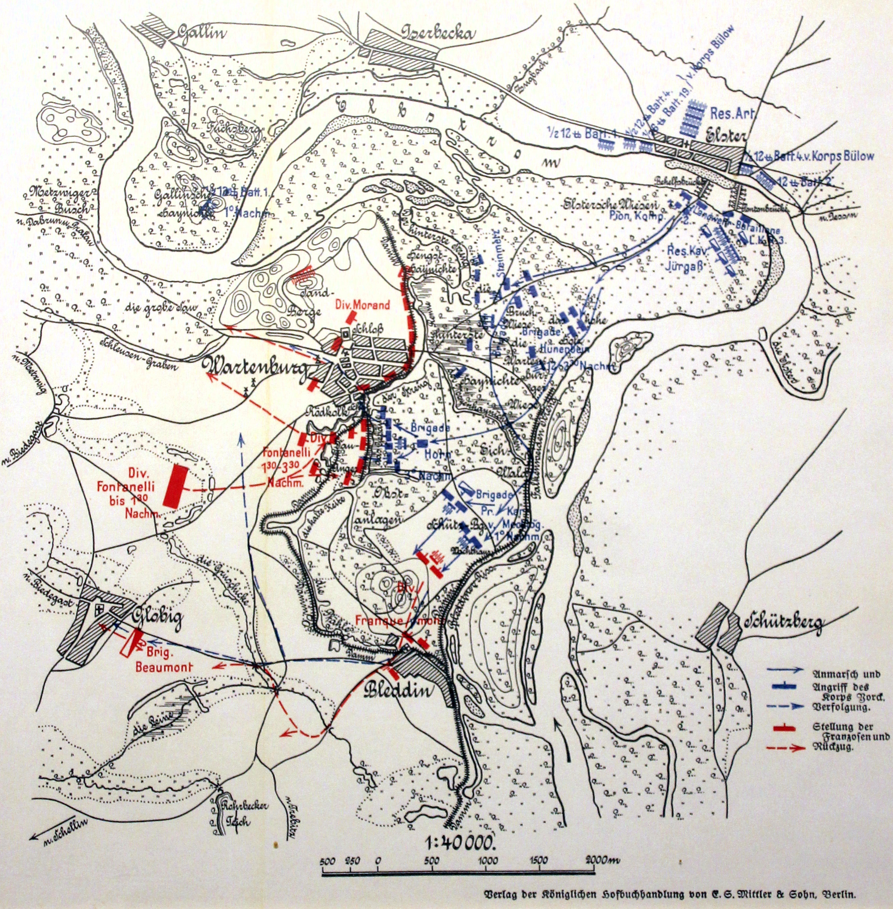
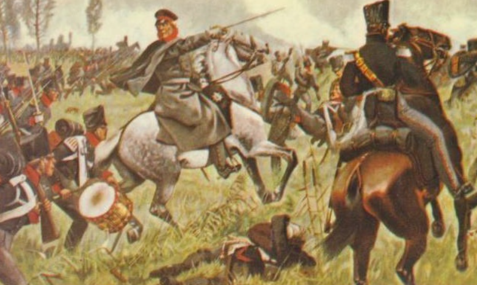
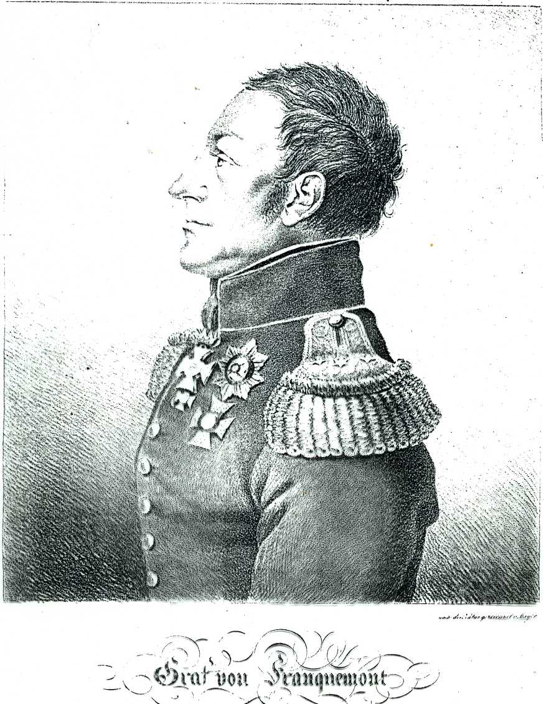
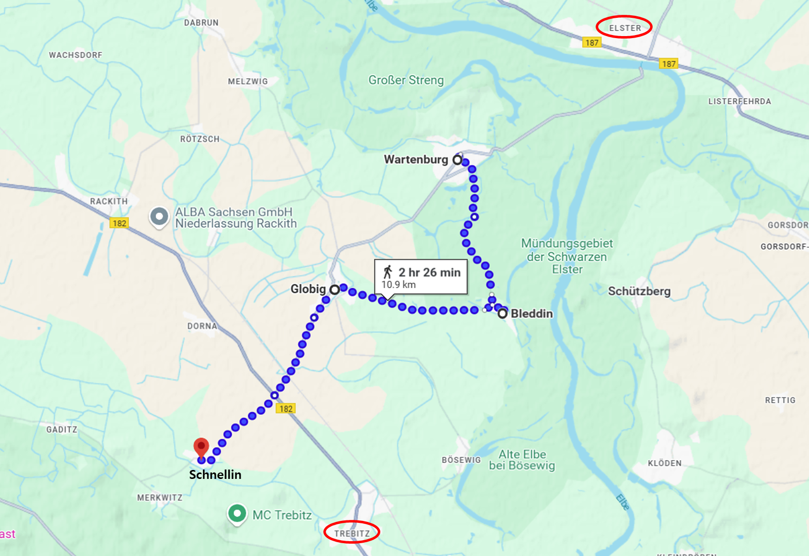
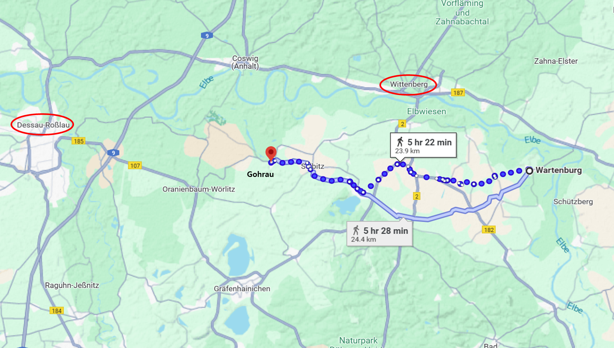

라이프치히로 가는 길 (13) - 바르텐부르크 전투 (하)
게시: 2025-01-20T06:30:06+09:00
카알 대공은 이 상태에서 개활지로 나가 란담(Landdamm) 제방을 향해 돌격하는 것은 그냥 자살 행위라고 판단했습니다. 그는 부하들을 자살로 이끌 생각은 없었기에, 과감히 좌측, 그러니까 남쪽으로 우회하여 측면을 공격하기로 했습니다. 그는 휘하의 총 4개 대대 중 2개 대대를 현장에 남겨 거기서 바르텐부르크 내의 적군의 이목을 끌도록 하고는 자신은 나머지 2개 대대를 이끌고 남쪽으로 향했습니다. 다행히 가는 길에 우호적인 현지 주민들을 만나 그들의 길안내에 따라 개활지로 나설 수 있었는데, 그 개활지는 바르텐부르크와 그 남쪽에 위치한 블레딘(Bleddin) 마을 딱 중간 위치였습니다. 거기서 보니 블레딘 마을에도 대포까지 거느린 그랑다르메 소속 뷔르템베르크군 몇 개 대대가 주둔한 것이 보였습니다.

(바르텐부르크 일대의 지형을 보여주는 또 다른 지도입니다.)
그 개활지를 가로질러 블레딘 마을을 습격하는 것도 쉬워 보이지가 않았으므로, 이번에는 다시 북동쪽으로 올라가 블레딘 마을의 측면으로 접근하려고 해봤습니다. 그러나 길잡이들이 반대하는 것에는 이유가 있었습니다. 이리저리 기를 쓰고 길을 찾아보았으나 도저히 무장 병력이 통과할 만한 길은 전혀 나오지 않았습니다. 그러는 사이에 이들을 포착한 바르텐부르크와 블레딘에서 십자포화가 날아오기 시작했습니다. 길이 너무 열악하여 포병은 아예 데리고 오지도 않았던 카알 대공은 다시 숲 속으로 피신한 뒤 황급히 연필과 종이를 꺼내 요크 대공에게 지원 요청을 하는 수 밖에 없었습니다.

(목책(abatis)이란 벽을 쌓는 것이 아니라 이 사진처럼 나무를 듬성듬성 엮어 그 사이로 총알 세례를 퍼부을 수 있지만 적 보병들이 쉽게 넘지는 못하도록 만든 장애물입니다. 나중에 철사가 발명되면서 목책은 가시철조망으로 바뀌게 됩니다. 이 사진은 미국 남북전쟁 시대의 목책입니다.) 카알 대공이 바르텐부르크의 정면에 남겨두고 온 2개 대대도 진격을 시작했으나 예상대로 막대한 피해만 입고 후퇴한 뒤 요크 대공에게 지원 요청서를 작성해야 했습니다. 요크 대공은 슈타인메츠(Steinmetz) 중령이 이끄는 여단을 바르텐부르크 정면에 투입했는데, 이들은 바로 전에 투입된 부대처럼 처절하게 갈려나갔습니다. 슈타인메츠 중령이라는 사람은 평소에도 매우 냉정한 사람이었는데, 정말 푸주간 주인이 소세지 분쇄기에 고기를 집어넣듯이 휘하 대대들을 하나씩 투입하며 전의를 불태웠습니다. 그러나 바르텐부르크의 그랑다르메는 더욱 신이 나서 머스켓 총탄과 포도탄을 쏟아부었고, 곧 슈타인메츠 여단 거의 전체를 괴멸시켜버렸습니다. 현장에 뒤늦게 도착한 러시아군 랑쥬롱 장군의 목격담에 따르면 그랑다르메가 세워둔 장애물 목책 앞에 1천이 넘는 시체가 겹겹이 쌓여 쓰러져 있었으며, 그 뒤로 진격하던 프로이센군은 먼저 쓰러진 전우들의 시신을 먼저 치워낸 뒤에야 그 목책에 닿을 수 있었는데, 이들도 곧 피범벅이 되어 쓰러지며 먼저 간 동료들의 뒤를 따라야 했습니다. 당시의 전투는 머스켓 소총 일제 사격 몇 번을 주고 받은 뒤 총검을 이용한 백병전으로 이어지는 것이 일반적이엇는데, 이 전투에서는 총검을 전혀 쓰지 않고도 엄청난 사상자가 발생했습니다.
(살륙의 전투 현장을 영어로는 정말 sausage grinder라고 부릅니다. 우리말로는 뭐라고 부르는지 당장 생각이 나지 않네요.) 프로이센군도 포병으로 대응하면 되는 거 아니었을까요? 당연히 시도는 해보았습니다. 그러나 그랑다르메 수비군이 얼마나 얄밉게도 지형지물을 잘 활용해놓았는지, 그 목책을 넘기 전에는 프로이센군 포병이 대포를 방열할 자리를 전혀 찾지 못했습니다. 다급했던 프로이센군은 엘베강 건너편에서 포병들을 전개하고 강 너머의 모래언덕으로 견제 포격을 해보았지만, 우수한 프랑스 포병의 전통은 여전했는지 모래언덕에 배치된 포병들은 더 높은 위치를 잘 활용하여 더 큰 구경의 대포로 정확한 포격을 퍼부으며 대응에 나섰습니다. 결국 강 건너편의 프로이센 포병들은 패배를 인정하고 후퇴할 수 밖에 없었습니다. 이렇게 완벽(?)한 방어 태세를 갖추고 있던 것은 베르트랑(Henri Gatien Bertrand)과 그의 그랑다르메 제4군단 전체였습니다. 이미 바르텐부르크 일대에서 보슈텔의 프로이센군과 대치해보았던 베르트랑은 이 일대의 지형을 잘 알고 있었고, 게다가 그 자신이 바그람 전투에서 사용된 부교를 직접 건설했던 프랑스군 최고의 공병 전문가였습니다. 그는 현장에 도착한지 불과 이틀 정도의 짧은 시간 동안 지형지물을 잘 활용하여 거의 난공불락에 가까운 요새를 건설해놓았던 것입니다. 다만 바르텐부르크는 너무 작은 도시인데다 까딱하다간 적이 바르텐부르크를 포위하여 그의 발을 묶어놓은 뒤 그냥 라이프치히쪽이든 데사우쪽이든 전진해버릴 수도 있었습니다. 그래서 바르텐부르크에는 주력인 모랑 사단을, 그 남쪽의 블레딘에는 프란커몬트(Friedrich von Franquemont)의 뷔르템베르크 사단을, 그리고 바르텐부르크 바로 남서쪽에는 폰타넬리(Achille Fontanelli)의 이탈리아 사단을 배치해두었던 것입니다.

(바르텐부르크 일대의 부대 배치도입니다.) 하지만 베르트랑의 방어진도 당연히 취약점이 있었습니다. 바르텐부르크와 블레딘 마을 사이의 거리는 1시간도 안되는 행군거리인 3.5km 정도였으니 멀지는 않았지만, 그 사이의 공간은 카알 대공을 당황하게 만들 정도로 교통이 좋지 않아 서로를 지원할 수가 없었습니다. 이건 작전에 있어 반드시 피해야 하는 단절적인 병력 분산이었습니다. 게다가 블레딘 마을 주변의 지형은 바르텐부르크만큼 철옹성 요새는 아니었으므로, 결국 블레딘이 전체 방어망의 약한 고리가 될 수 밖에 없었습니다. 그리고 결국 그 약한 고리가 승패를 결정했습니다. 공격이 난관에 부딪혔다는 보고를 받은 요크 대공은 곧 바르텐부르크 정면의 살육 현장에 직접 도착했습니다. 그의 바로 뒤를 따르던 참모가 포도탄에 얼굴을 정통으로 맞아 피떡이 되어 쓰러질 정도로 상황은 심각했으며, 요크 대공은 이건 진짜 승산없는 돌격이라는 것을 즉각 파악했습니다. 바르텐부르크 뒤쪽에 솟은 모래언덕에 그랑다르메의 18인치 대구경포로 무장한 강력한 포병대가 잔뜩 늘어서서 프로이센군에게 포도탄과 구형탄을 뒤섞어 날려대고 있었던 것입니다. 그가 내린 판단도 처음 이곳에 도착했던 젊은 카알 대공의 판단과 동일했습니다. 즉, 남쪽으로 우회하여 먼저 블레딘을 점령하고, 그 뒤에 바르텐부르크의 남쪽 측면을 공격해야 한다는 것이었습니다. 그는 이미 블레딘에서 고전하고 있던 카알 대공에게 보병과 포병을 포함한 지원 병력을 잔뜩 보내주며 어떻게 해서든 블레딘을 점령하라는 명령을 전달했습니다. 이때 즈음해서는 랑쥬롱의 러시아군도 부교를 건너 바르텐부르크 인근으로 쇄도하고 있었습니다.

(바르텐부르크 전투를 지휘하는 요크 대공입니다.) 결국 싸움은 그렇게 머리 숫자와 시간, 그리고 끈기와 희생으로 결정되었습니다. 지원 병력을 잔뜩 받은 카알 대공은 3시간 이상을 들여 마른 운하에 흙을 쌓아 대포가 지나갈 수 있는 통로를 만들었고, 오후 1시경에야 진격을 시작했습니다. 블레딘의 뷔르템베르크 사단은 처음에는 나름 잘 싸웠으나, 화력과 병력 모든 면에서 밀리게 되자 결국 블레딘에서 물러날 수 밖에 없었습니다. 뷔르템부르크 사단은 프란커몬트의 지휘하에 질서정연하게 남서쪽, 그러니까 트레비츠(Trebitz) 방향으로 후퇴했으나, 도중에 베르트랑의 명령서를 손에 쥔 전령이 그들을 따라잡았습니다. 전장에 이탈하지 말고 자신이 있는 바르텐부르크로 와서 합류하라는 명령이었습니다. 하지만 애초에 카알 대공이 맞닥뜨렸던 것처럼, 블레딘과 바르텐부르크 사이에는 길이 없었습니다. 결국 프란커몬트는 어쩔 수 없이 방향을 서쪽으로 틀어 먼저 글로빅(Globig)에 도착한 뒤 거기서 다시 북동쪽 길을 따라 바르텐부르크로 가려고 했습니다. 그러나 이렇게 적군이 먼 길을 우회하여 본대와 합류하려는 것을 내버려둘 리가 없었지요. 이들은 도중에 프로이센 기병대의 습격을 받고 손실을 입은 뒤, 결국 바르텐부르크로의 행군을 포기하고 남서쪽 슈넬린(Schnellin) 마을로 후퇴했고, 거기서 멈추지 않고 밤새도록 행군하여 남서쪽으로 25km 떨어진 바트 뒤벤(Bad Düben)까지 후퇴했습니다.

(프란커몬트는 꽤 독특한 이력의 장군입니다. 나폴레옹보다 1살 연하였던 그는 뷔르템베르크 공작과 어느 무희의 사생아로 태어났고, 그런 신분에 어울리는 실무 교육을 받은 뒤 17세에 일종의 외인부대에 소위로 입대한 뒤, 네덜란드 동인도 회사 군으로 이적하여 본격적인 용병의 삶을 살았습니다. 그는 남아프리카, 인도네시아, 실론 섬 등에서 복무했고, 네덜란드 식민지들이 영국군에게 점령당할 때 포로가 되어 30세의 나이로 유럽으로 돌아왔습니다. 이후 뷔르템베르크 정규군에 입대하여 고속 승진하여 1813년 전쟁에 참전한 것입니다. 그는 1815년 뷔르템베르크가 연합군측으로 옮겨간 뒤 뷔르템베르크군 총사령관이 되었습니다.)

(프란커몬트 사단은 블레딘에서 트레비츠로 향하다 방향을 꺾어 글로빅으로 가려했고, 그러다 도중에 요격을 당해 결국 슈넬린으로 후퇴했습니다.) 이렇게 블레딘이 함락되어 프로이센군의 측면에 대한 위협이 사라지자, 바르텐부르크의 측면을 향한 공격도 시작되었습니다. 든든한 란담 제방이 아니라 남서쪽 측면으로부터 집요한 공격이 시작되자, 철옹성 같던 바르텐부르크도 흔들릴 수 밖에 없었습니다. 이미 블레딘도 함락되고 남서쪽에 배치해둔 폰타넬리의 이탈리아 사단도 무너지자, 결국 베르트랑도 8시간 동안의 치열한 화력전 끝에 바르텐부르크를 버리기로 하고 서쪽으로 후퇴했습니다. 이들의 뒤를 프로이센군 기병대가 추격했으나, 역시나 워낙 지형이 좋지 않아 기병대의 대규모 추격은 없었으므로 베르트랑의 본대는 무사히 비텐베르크 남쪽을 지나 고라우(Gohrau)로 후퇴할 수 있었습니다.

(바르텐부르크부터 고라우(Gohrau)까지는 대략 7시간 행군거리입니다. 뷜로의 프로이센군에게 포위된 비텐베르크가 그 북쪽에 보이는데, 비텐베르크는 엘베강 우안, 그러니까 북쪽 강변에 있는 요새라서 당연히 뷜로도 엘베강 건너편에 주둔하고 있었으므로 베르트랑의 후퇴를 가로막는 적군은 없었습니다.) 이렇게 10월 3일 바르텐부르크 전투가 마무리됩니다. 별로 기억하는 사람이 많지 않은 이 작은(?) 전투가 가지는 의미는 과연 무엇이었을까요? Source : The Life of Napoleon Bonaparte, by William Milligan Sloane Napoleon and the Struggle for Germany, by Leggiere, Michael V With Napoleon's Guns by Colonel Jean-Nicolas-Auguste Noël https://www.britannica.com/event/Napoleonic-Wars/Dispositions-for-the-autumn-campaign http://www.historyofwar.org/articles/campaign_leipzig.html https://en.wikipedia.org/wiki/Battle_of_Wartenburg https://en.wikipedia.org/wiki/Duke_Charles_of_Mecklenburg https://www.digitalcommonwealth.org/search/commonwealth:wd376b99r https://wargamerabbit.wordpress.com/2015/06/23/battle-of-wartenburg-1813/ https://en.wikipedia.org/wiki/Frederic_von_Franquemont